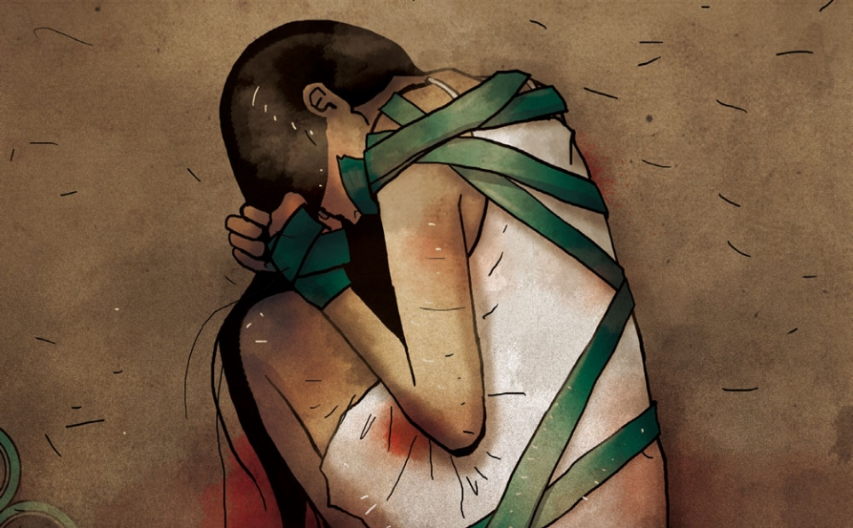
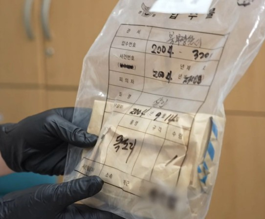
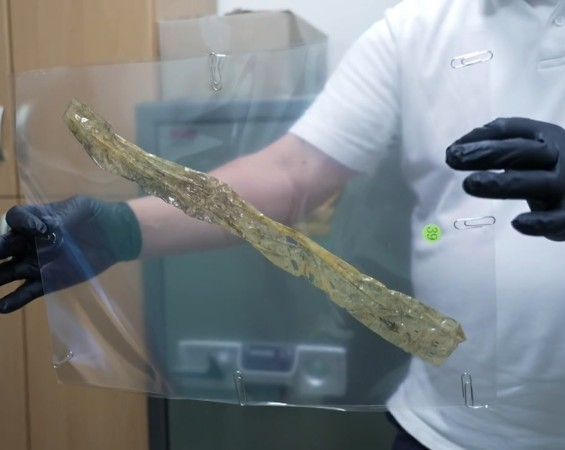

1. 사건 개요
2004년 9월 14일, 광주광역시 북구 용봉동 M아파트 104동 13XX호에서 발생한 잔혹한 살인사건입니다. 피해자는 당시 만 22세였던 전남대학교 사범대학 미술교육과 4학년에 재학 중이던 손 모 씨입니다.
- 양손이 뒤로 묶인 채 발견됨
- 노란 박스테이프로 얼굴이 밀봉됨
- 20년이 지나도 미제 사건으로 남음
2. 사건 발생 및 현장 상황
피해자는 사건 당일 가족들이 모두 외출한 상태에서 혼자 집을 지키고 있었습니다. 오후 8시 30분경, 일이 끝나고 귀가한 피해자의 어머니가 피해자의 처참한 시신을 발견하여 경찰에 신고했습니다.
- 현관문은 번호키 방식으로 외부 침입 어려움
- 외출복과 양말을 착용한 상태
- 머리·얼굴에 타박상, 격렬한 저항 흔적 확인
- 청테이프 아닌 노란 박스테이프 사용
- 현금 13,000원과 휴대폰 도난
- 휴대폰은 인근 병원 인근에서 꺼짐
3. 수사 진행 및 목격자 증언
경찰은 피해자의 사망 시간을 오전 9시에서 10시 사이로 추정했습니다. 여러 주민 증언이 수사에 중요한 단서가 되었으나, 결정적인 증거는 발견되지 않았습니다.
- 15층 주민이 모자 쓴 남성을 인터폰으로 목격함
- 14층 주민은 남성 2명을 오전 9시경 목격함
- 12층 주민은 위층에서 쿵쿵거리는 소리 들음
- 피해자 PC에서 '증거 인멸' 검색 기록 확인됨
4. 사건 분석 및 결론
경찰 수사 초기에는 면식범 가능성에 집중했으나, 주요 목격자 진술 및 현장 증거를 제대로 해석하지 못해 수사 방향에 차질이 있었습니다. 2024년 국립과학수사연구원 재감정 결과, 남성 DNA 일부가 확보되어 추가 수사가 진행 중입니다.
- 범인은 단독 범행일 가능성 높음
- 금품 목적 범행으로 추정됨
- 피해자는 살아 있는 상태에서 질식사함
- 범인은 계획에 없던 사망에 당황해 도주함
- 초기 수사 방향 실패로 미제 사건으로 남음
현재도 이 사건은 미궁 속에 있으며, 관련 증거물 재분석과 추가 목격자 조사 등으로 진실 규명이 시도되고 있습니다.